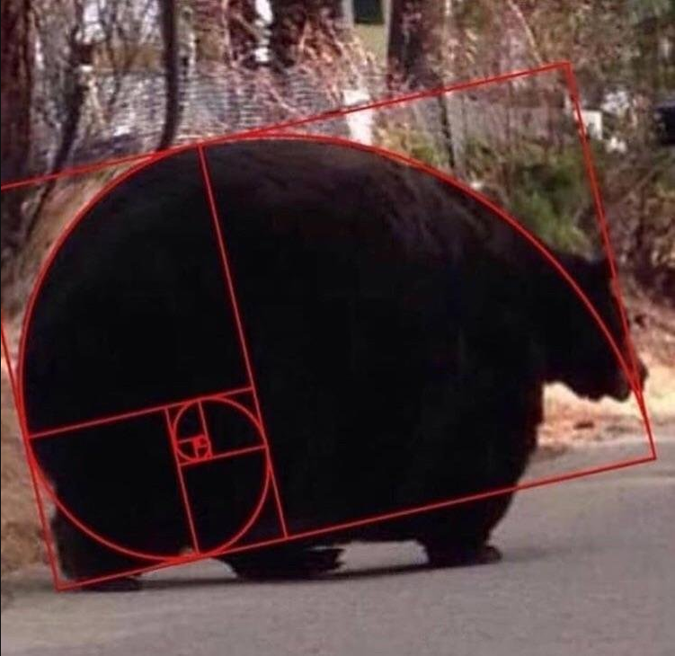
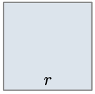
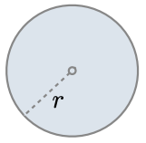
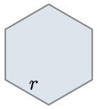
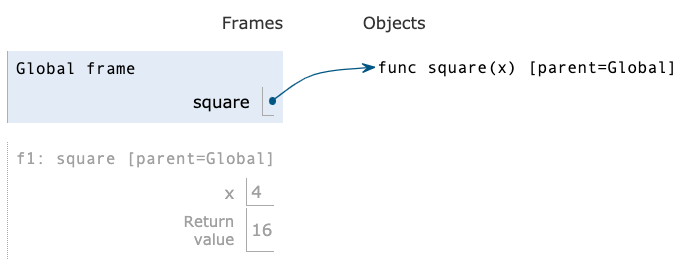
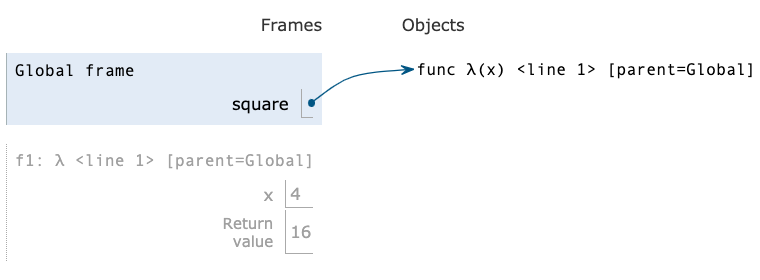

Higher-Order Functions
- Press O or Escape for overview mode.
- Visit this link for a nice printable version
- Press the copy icon on the upper right of code blocks to copy the code
Class outline:
- Iteration example
- Designing functions
- Generalization
- Higher-order functions
- Lambda expressions
- Conditional expressions
Iteration example
Virahaṅka-Fibonacci numbers
Discovered by Virahanka in India, 600-800 AD, later re-discovered in Western mathematics and commonly known as Fibonacci numbers.
Virahanka's question
How many poetic meters exist for a total duration?
S = short syllable, L = long syllable
| Duration | Meters | Total |
|---|---|---|
| 1 | S | 1 |
| 2 | SS, L | 2 |
| 3 | SSS, SL, LS | 3 |
| 4 | SSSS, SSL, SLS, LSS, LL | 5 |
| 5 | SSSSS, SSSL, SSLS, SLSS, SLL, LLS, LSL, LSSS | 8 |
The So-called Fibonacci Numbers in Ancient and Medieval India
Fibonacci's question
How many pairs of rabbits can be bred after N months?

Attribution: Fschwarzentruber, Wikipedia
Virahanka-Fibonacci number generation
VF 0 1 1 2 3 5 8 13 21 34 55 …
N 0 1 2 3 4 5 6 7 8 9 10 …
def vf_number(n):
"""Compute the nth Virahanka-Fibonacci number, for N >= 1.
>>> vf_number(2)
1
>>> vf_number(6)
8
"""
prev = 0 # First Fibonacci number
curr = 1 # Second Fibonacci number
k = 1
while k < n:
(prev, curr) = (curr, prev + curr)
k += 1
return curr
Golden spiral
The Golden spiral can be approximated by Virahanka-Fibonacci numbers.

Go bears!
The Golden spiral is found everywhere in nature...
Designing Functions
Describing Functions
def square(x):
"""Returns the square of X."""
return x * x
| Aspect | Example |
|---|---|
| A function's domain is the set of all inputs it might possibly take as arguments. | x is a number
|
| A function's range is the set of output values it might possibly return. | square returns a non-negative real number
|
| A pure function's behavior is the relationship it creates between input and output. | square returns the square of x
|
Designing a function
Give each function exactly one job, but make it apply to many related situations.
round(1.23) # 1
round(1.23, 0) # 1
round(1.23, 1) # 1.2
round(1.23, 5) # 1.23
Don't Repeat Yourself (DRY): Implement a process just once, execute it many times.
Generalization
Generalizing patterns with arguments
Geometric shapes have similar area formulas.
| Shape |  |  |  |
|---|---|---|---|
| Area | $$\colorbox{#f8e9eb}{$1$} * r^2$$ | $$\colorbox{#f8e9eb}{$\pi$} * r^2$$ | $$\colorbox{#f8e9eb}{$\dfrac{3\sqrt{3}}{2}$} * r^2$$ |
A non-generalized approach
from math import pi, sqrt
def area_square(r):
return r * r
def area_circle(r):
return r * r * pi
def area_hexagon(r):
return r * r * (3 * sqrt(3) / 2)
How can we generalize the common structure?
Generalized area function
from math import pi, sqrt
def area(r, shape_constant):
"""Return the area of a shape from length measurement R."""
if r < 0:
return 0
return r * r * shape_constant
def area_square(r):
return area(r, 1)
def area_circle(r):
return area(r, pi)
def area_hexagon(r):
return area(r, 3 * sqrt(3) / 2)
Higher-order functions
What are higher-order functions?
A function that either:
- Takes another function as an argument
- Returns a function as its result
All other functions are considered first-order functions.
Generalizing over computational processes
$$\sum\limits_{k=1}^5 \colorbox{#f8e9eb}{$k$} = 1 + 2 + 3 + 4 + 5 = 15$$ $$\sum\limits_{k=1}^5 \colorbox{#f8e9eb}{$k^3$} = 1^3 + 2^3 + 3^3 + 4^3 + 5^3 = 225$$ $$\sum\limits_{k=1}^5 \colorbox{#f8e9eb}{$\dfrac{8}{(4k - 3)\cdot(4k - 1)}$} = \dfrac{8}{3} + \dfrac{8}{35} + \dfrac{8}{99} + \dfrac{8}{195} + \dfrac{8}{323} = 3.04$$
The common structure among functions may be a computational process, not just a number.
Functions as arguments
def cube(k):
return k ** 3
def summation(n, term):
"""Sum the first N terms of a sequence.
>>> summation(5, cube)
225
"""
total = 0
k = 1
while k <= n:
total = total + term(k)
k = k + 1
return total
Functions as return values
Locally defined functions
Functions defined within other function bodies are bound to names in a local frame.
def make_adder(n):
"""Return a function that takes one argument k
and returns k + n.
>>> add_three = make_adder(3)
>>> add_three(4)
7
"""
def adder(k):
return k + n
return adder
Call expressions as operator expressions
Lambda expressions
Lambda syntax
A lambda expression is a simple function definition that evaluates to a function.
The syntax:
lambda <parameters>: <expression>
A function that takes in parameters and returns the result of expression.
A lambda version of the square function:
square = lambda x: x * x
A function that takes in parameter x and returns the result of x * x.
Lambda syntax tips
A lambda expression does not contain return statements or any statements at all.
Incorrect:
square = lambda x: return x * x
square = lambda x: x * x
Def statements vs. Lambda expressions
|
vs | |
|---|---|---|
|  |  | |
| Both create a function with the same domain, range, and behavior. | ||
| Both bind that function to the name square. | ||
Only the def statement gives the function an intrinsic name, which shows up in
environment diagrams but doesn't affect execution (unless the function is printed).
|
||
Lambda as argument
It's convenient to use a lambda expression when you are passing in a simple function as an argument to another function.
Instead of...
def cube(k):
return k ** 3
summation(5, cube)
We can use a lambda:
summation(5, lambda k: k ** 3)
Conditional expressions
Conditional expressions
A conditional expression has the form:
<consequent> if <predicate> else <alternative>
Evaluation rule:
- Evaluate the <predicate> expression.
- If it's a true value, the value of the whole expression is the value of the <consequent>.
- Otherwise, the value of the whole expression is the value of the <alternative>.
Lambdas with conditionals
This is invalid syntax:
lambda x: if x > 0: x else: 0
Conditional expressions to the rescue!
lambda x: x if x > 0 else 0